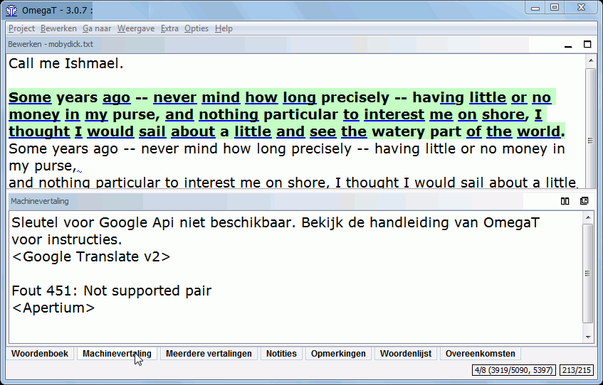

Google Translate
Google Translate is de service, die wordt aangeboden door Google, om zinnen, websites en complete teksten te vertalen tussen een nog steeds groeiend aantal talen. Op het moment van schrijven bevat de lijst meer dan 50 talen, van Albanees tot Jiddisch, inclusief natuurlijk alle grote talen (zie Beschikbare talen voor vertaling). De vertalingen worden geproduceerd door de allernieuwste technologieën, zonder tussenkomst van menselijke vertalers. Google's researchgroep heeft zijn eigen statistische vertaalsysteem ontworpen voor de taalparen die nu beschikbaar zijn via Google Translate. In tegenstelling tot gebruiker-gegenereerde vertaalgeheugens aan de ene kant (zoals in het geval van OmegaT) of op regels-gebaseerde systemen (gewoonlijk te vinden onder de naam "machine translation" of afgekort MT) kan Google zich een andere benadering veroorloven: zij voeden de computer met biljoenen aan tekstwoorden, zowel ééntalige tekst in de doeltaal, en gekoppelde tekst die bestaat uit voorbeelden van menselijke vertalingen tussen de talen. Statistische leertechnieken worden dan toegepast om een vertaalmodel te bouwen, dat zeer goede resultaten behaalt in evaluaties van het onderzoek.
De kwaliteit van de vertaling is aan de ene kant natuurlijk afhankelijk van het reservoir aan teksten in de doeltaal en de beschikbaarheid van hun meertalige versies, aan de andere kant ook van de kwaliteit van de gebouwde modellen. Het is haast wel zeker dat, hoewel de kwaliteit in sommige gevallen onvoldoende kan zijn, het uiteindelijk mettertijd beter zal worden en niet slechter. Zelfs de hedendaagse meest uitgebreide software, kan echter de vloeiende tong van een spreker van de eigen taal benaderen of de vaardigheden van een professionele vertaler hebben. Automatisch vertalen is zeer moeilijk door de problemen met context (de zin "Tijd vliegt als een pijl voorbij" zou hiervoor het best bekende voorbeeld kunnen zijn), kan het enige tijd duren voordat iemand vertalingen in menselijke kwaliteit kan aanbieden.
De gebruiker van OmegaT is niet gedwongen om Google Translate te gebruiken. Indien het wordt gebruikt zal de beslissing van de gebruiker om de vertaling te accepteren, noch de uiteindelijke vertaling beschikbaar worden gemaakt voor Google. Het volgende venster geeft een voorbeeld weer van a) de Engelse bron b) Spaanse en c) Sloveense vertaling in Google Translate.

De Spaanse vertaling is beter dan de Sloveense. Merk interesar en navegar in de Spaanse op, waarin de werkwoorden interest en sail correct vertaald zijn. In de Sloveense versie worden beide woorden vertaald als zelfstandige naamwoorden. Onthoud echter dat het verschil alleen te wijten is aan het feit dat er meer meertalig materiaal beschikbaar is voor de Spaanse taal dan dat er is voor Sloveens.
Hoe Google Translate te gebruiken in OmegaT
Vink het menu-item Google Translate in Opties aan om het gebruik er van te activeren. Als dit voor de eerste keer wordt gebruikt moet u het laatste menuitem, "Hoofdvenster herstellen" - in Opties uitvoeren. Als het venster van Google Translate niet is geopend klikt u op "Google Translate" in de regel aan de onderzijde van het venster om het venster te openen. Pas de positie aan zoals u dat wilt.
Vanaf nu zal er een suggestie voor de vertaling verschijnen in het venster Google Translate voor elk nieuw bronsegment dat wordt geopend. Indien u de suggestie acceptabel vindt, druk op Ctrl+M om het doelgedeelte van het geopende segment te vervangen. In het segment hierboven, bijvoorbeeld, zou Ctrl+M de Spaanse versie overschrijven met de Sloveense suggestie.
Indien u niet wilt dat OmegaT uw bronsegmenten verstuurt naar Google om te worden vertaald, verwijdert u het vinkje vóór het menuitem Google Translate in Opties.
Google Translate probleemoplossing
Indien er niets verschijnt in het venster Google Translate, controleer dan het volgende:
- Bent u online? U moet online zijn om Google Translate te kunnen gebruiken.
- Wat is de brontaal? Google Translate zou mogelijk nog niet in staat zijn om zijn service er voor aan te bieden.
- Controleer Google Translate online voor uw talenpaar. Werkt het?